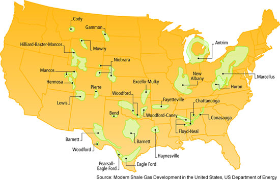

Hydraulic Fracturing
Hydraulic fracturing (also fracking) is a well stimulation technique in which rock is fractured by a pressurized liquid. The process involves the high-pressure injection of 'fracking fluid' into a wellbore to create cracks in the deep-rock formations through which natural gas, petroleum, and brine will flow more freely.
Inventor
Floyd Farris, Joseph B. Clark (Stanolind Oil and Gas Corporation)
Year of invention
1947
Main technologies or sub-processes
The main purposes of fracturing fluid are to extend fractures, add lubrication, change gel strength, and to carry proppant into the formation. There are two methods of transporting proppant in the fluid – high-rate and high-viscosity. High-viscosity fracturing tends to cause large dominant fractures, while high-rate (slickwater) fracturing causes small spread-out micro-fractures
Why is Hydraulic Fracturing Used?
Experts believe 60 to 80 percent of all wells drilled in the United States in the next ten years will require hydraulic fracturing to remain operating. Fracturing allows for extended production in older oil and natural gas fields. It also allows for the recovery of oil and natural gas from formations that geologists once believed were impossible to produce, such as tight shale formations in the areas shown on the map below. Hydraulic fracturing is also used to extend the life of older wells in mature oil and gas fields.

How is Hydraulic Fracturing Done?
The placement of hydraulic fracturing treatments underground is sequenced to meet the particular needs of the formation. The sequence noted below from a Marcellus Shale in Pennsylvania is just one example. Each oil and gas zone is different and requires a hydraulic fracturing design tailored to the particular conditions of the formation. Therefore, while the process remains essentially the same, the sequence may change depending upon unique local conditions. It is important to note that not all of the additives are used in every hydraulically fractured well; the exact “blend” and proportions of additives will vary based on the site-specific depth, thickness and other characteristics of the target formation.
- An acid stage, consisting of several thousand gallons of water mixed with a dilute acid such as hydrochloric or muriatic acid: This serves to clear cement debris in the wellbore and provide an open conduit for other frac fluids by dissolving carbonate minerals and opening fractures near the wellbore.
- A pad stage, consisting of approximately 100,000 gallons of slickwater without proppant material: The slickwater pad stage fills the wellbore with the slickwater solution (described below), opens the formation and helps to facilitate the flow and placement of proppant material.
- A prop sequence stage, which may consist of several substages of water combined with proppant material (consisting of a fine mesh sand or ceramic material, intended to keep open, or “prop” the fractures created and/or enhanced during the fracturing operation after the pressure is reduced): This stage may collectively use several hundred thousand gallons of water. Proppant material may vary from a finer particle size to a coarser particle size throughout this sequence.
- A flushing stage, consisting of a volume of fresh water sufficient to flush the excess proppant from the wellbore.